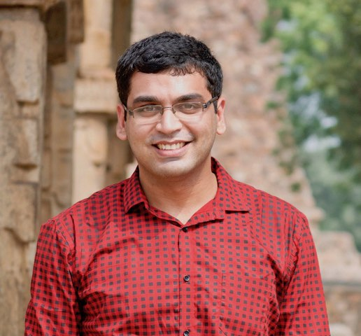

Nipun Batra
Associate Professor at IIT Gandhinagar · Lead, Sustainability Lab
Nipun Batra is an Associate Professor in Computer Science at IIT Gandhinagar, where he leads the Sustainability Lab. He previously completed his postdoc at the University of Virginia and his PhD from IIIT Delhi as a TCS PhD fellow.
His group develops AI-powered solutions for critical sustainability challenges including smart buildings, air quality monitoring, and wearable healthcare technologies.
His work has received several awards, including Best Paper Runner-Up at ACM BuildSys 2026, ACM eEnergy Test of Time Award 2025, ACM SIGEnergy Rising Star Award 2025, Excellence in Teaching Award at IITGN 2025, Young Alumni Award from IIIT Delhi 2023, Best PhD Presentation at ACM SenSys 2015, Best Demo at ACM BuildSys 2014, and Best Video Nominee at ACM KDD 2016.

IIT Gandhinagar